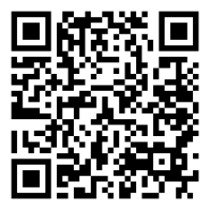
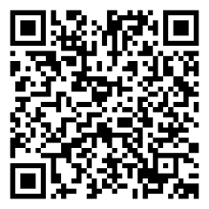

Comunicación asertiva y resolución de conflictos
La comunicación asertiva es decir lo que piensas y sientes con claridad y respeto. El conflicto no es “malo”: es una diferencia que, bien manejada, puede ayudarnos a entendernos mejor y trabajar mejor.
En esta clase aprenderemos tres cosas: hablar sin atacar ni callarnos, escuchar de verdad a la otra persona y buscar acuerdos simples que sirvan a ambos. Usaremos frases modelo fáciles de recordar.
Trabajaremos con ejemplos cercanos, prácticas y al final, cada uno saldrá con un compromiso concreto para aplicar en su vida académica o personal.
Objetivos de aprendizaje
- 🧠 Diferenciar estilos de comunicación: pasiva, agresiva y asertiva.
- 🔍 Aplicar estrategias de comunicación asertiva.
- 📝 Analizar y proponer soluciones a conflictos comunes.
Comunicación asertiva y resolución de conflictos
Estilos de comunicación
Los estilos de comunicación
son las diferentes formas en que las personas se expresan e interactúan con los
demás.
Existen tres principales:
- 1. Pasivo
- 2. Agresivo
- 3. Asertivo:

- Pasivo: persona que no expresa lo que piensa o siente por miedo, inseguridad o deseo de evitar conflictos.
○ Ejemplo: estudiante que acepta una tarea que no puede hacer, solo por no decir “no”.

- Agresivo: persona que se comunica de forma dominante, sin respetar los sentimientos o derechos de los demás.
○ Ejemplo: gritar a un compañero porque se equivocó en un trabajo en grupo.
- Asertivo: persona que expresa lo que piensa, siente o necesita con respeto, claridad y firmeza, sin herir ni dejarse herir.
○ Ejemplo: decirle a un amigo: “Prefiero que me hables con más respeto. No me gustó tu forma de decirlo.”
Asertividad: definición y ejemplos
La asertividad
es la capacidad de expresar nuestras ideas, sentimientos y necesidades de forma clara, directa y respetuosa, sin agredir ni dejar que nos agredan.
Ejemplos de conducta asertiva:

La asertividad mejora la convivencia, evita malentendidos y fortalece la autoestima.
Técnicas asertivas
Existen estrategias sencillas para comunicarte de forma asertiva. Entre las cuales tenemos:
1. Mensaje en primera persona
Se enfoca en cómo te sientes tú, en lugar de culpar al otro.
○ Ejemplo: cambia esto: "¡Siempre me ignoras!", por esto: "Me siento ignorado cuando no me respondes."
2. Saber decir "no"
Poder negarse a algo de forma firme y educada, sin sentirse culpable.
○ Ejemplo: "Gracias por pensar en mí, pero no quiero participar en esa actividad."
3. Lenguaje corporal
Incluye la postura, el tono de voz, los gestos y el contacto visual. Un lenguaje corporal asertivo es seguro pero respetuoso.
○ Ejemplo: mirar a los ojos, mantener una postura erguida y hablar con voz clara pero tranquila.
Etapas para resolver un conflicto
Los conflictos son normales, pero lo importante es cómo se resuelven.
Aquí hay una forma de solucionarlos en etapas:

○ Ejemplo escolar: si dos compañeros discuten por el uso de un material en clase, pueden hablar sobre lo que pasó, escuchar al otro, y acordar turnarse o compartirlo.
Actividades prácticas
Actividad: Clasifica los estilos de comunicación
Arrastra cada frase hacia la definición que corresponda.
Frases:
"Entiendo tu punto, pero prefiero hacerlo de otra manera."
"Haz lo que quieras, no me importa."
"¡Siempre te equivocas, yo tengo la razón!"
"Si no me ayudas, no hablo contigo."
"Prefiero que me hables con más calma, por favor."
"Olvídalo, yo hago todo, como siempre."
Definiciones:
Asertivo
Expresa ideas con claridad y respeto
Pasivo
Evita expresar opiniones por miedo
Agresivo
Impone su opinión sin respetar a otros
Pasivo-agresivo
Expresa hostilidad de forma indirecta
Actividad 2: Identifica la expresión corporal
Arrastra cada emoji (expresión corporal) hacia el estilo de comunicación correcto.
Expresiones corporales:
Postura abierta, manos relajadas
Ceño fruncido, señalando con el dedo
Mirada baja, hombros caídos
Sonrisa irónica, brazos cruzados
Estilos de comunicación:
Asertivo
Pasivo
Agresivo
Pasivo-agresivo
Evaluación: "Hablar con firmeza y respeto"
Comprueba lo que has aprendido sobre comunicación asertiva y resolución de conflictos. Selecciona la respuesta correcta para cada pregunta.
Recursos para profundizar
Para ampliar tu conocimiento sobre ecuaciones y desigualdades, te recomendamos explorar los siguientes enlaces y documentos:
-
Casos de conflictos escolares y su resolución
Ir al recurso -
Sopa de letras
Ir al recurso
Bibliografía
Incluye técnicas de comunicación asertiva aplicadas a contextos educativos.
Explica de forma clara los estilos de comunicación y técnicas para mejorar la convivencia interpersonal.
Presenta contenidos sobre el desarrollo de habilidades para la vida, resolución pacífica de conflictos y participación democrática.
Aunque más general, aporta fundamentos sobre el manejo de emociones y relaciones interpersonales.